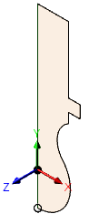
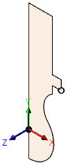

Point de correction
En bas au centre
Point de correction
Arête de coin
Sélectionnez la position de coupe critique. Il s'agit du point utilisé pour guider la coupe le long du bord du contour sélectionné.
 |
 |
|
Point de correction |
|
Point de correction |
Remarque: pour obtenir une visualisation uniforme, l'option Simulation affiche la trajectoire d'outil pilotée depuis le bas de l'outil, et non depuis le point de correction.